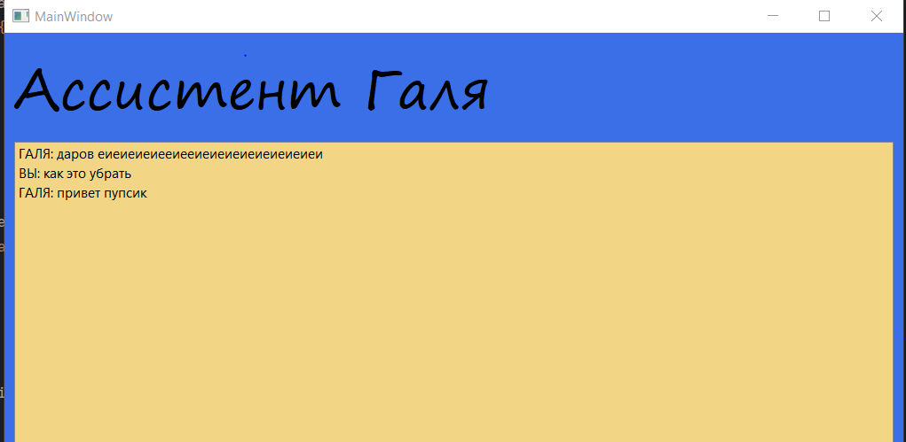
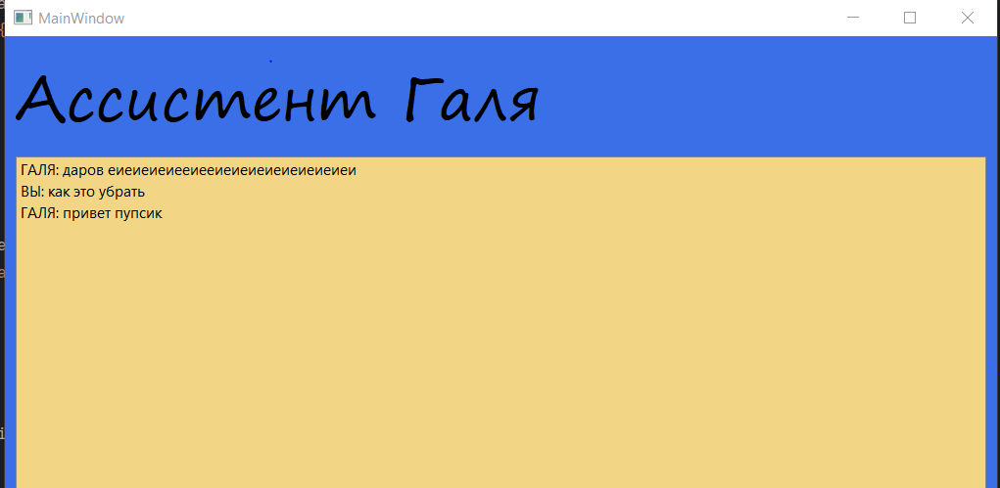

Neuro
Galya
нейроГаля - это самый лучший ассистент в истории человечества. Им пользуется даже Илон
Читать про всех галь
нейроГаля - это самый лучший ассистент в истории человечества. Им пользуется даже Илон
Читать про всех галь
Я Влад. люблю программирование и писание кодов. Еще у меня есть собсвенный голосовой помошник Галя.


 

нейроГаля
Программа которая дает много галь
Я написал ее на языке Пайтон.
На картинках справа есть пример